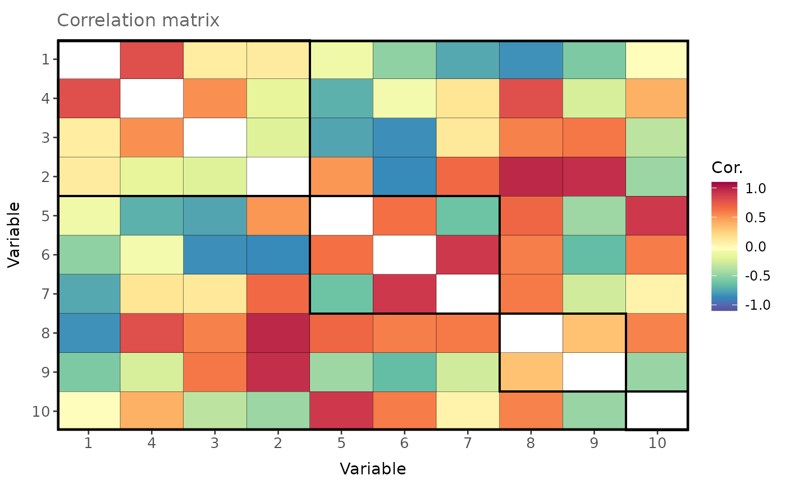

Creates a heatmap of a symmetric matrix (e.g., correlation or covariance matrix).
Arguments
- mat
A symmetric matrix.
- order
When
TRUE(default isFALSE), the functionagnesof the R package `cluster` is used with default arguments to order the matrix based on a dendrogram.- group.df
An optional data frame with columns containing the variable names followed by the group numbers. When supplied, the heatmap is split into groups and then ordered (when
order = TRUE).- labels
When
TRUE(default), variable labels are displayed.
Value
A heatmap with x- and y-axes displaying the variable numbers, and colour gradient ranging from blue (low value) to red (high value).
Examples
# Display a random correlation matrix.
cor_mat <- rand_cor_mat(
n = 10,
min.cor = -1,
max.cor = 1
)
# Define groups.
group_df <- data.frame(variable = 1:10, group = c(1, 1, 1, 1, 2, 2, 2, 3, 3, 4))
plot_matrix(
mat = cor_mat,
group.df = group_df,
order = TRUE,
labels = TRUE
)
